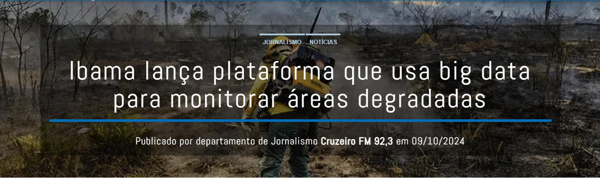

O que é Big Data?
Big Data é o processo de coletar, armazenar e analisar grandes volumes de dados para obter insights estratégicos que demandam formas inovadoras e rentáveis de processamento da informação, para melhor percepção e tomada de decisão.
Benefícios para Reservas Naturais
- análise de padrões climáticos
- avaliação de impactos ambientais
- estudos de biodiversidade
- tomada de decisões baseada em evidências
Como Funciona?
Na esfera ambiental, a análise de dados em grande escala ajuda a monitorar as mudanças climáticas, avaliar o impacto das atividades humanas no meio ambiente e desenvolver estratégias para mitigar os efeitos adversos. Desempenha um papel crucial na otimização do uso de recursos. Na gestão florestal, por exemplo, os dados podem ajudar a prever o risco de incêndios florestais, o crescimento da vegetação e a biodiversidade, permitindo que os gestores implementem práticas de conservação e uso sustentável que protegem as florestas e a vida selvagem.
Exemplos de Uso
Plataforma que usa Big Data para monitorar áreas degradadas (Brasil)
Uso
Benefícios

Quer saber mais?
Entre em contato com especialistas ou acesse nossos materiais sobre tecnologia e meio ambiente.
Fale com a gente